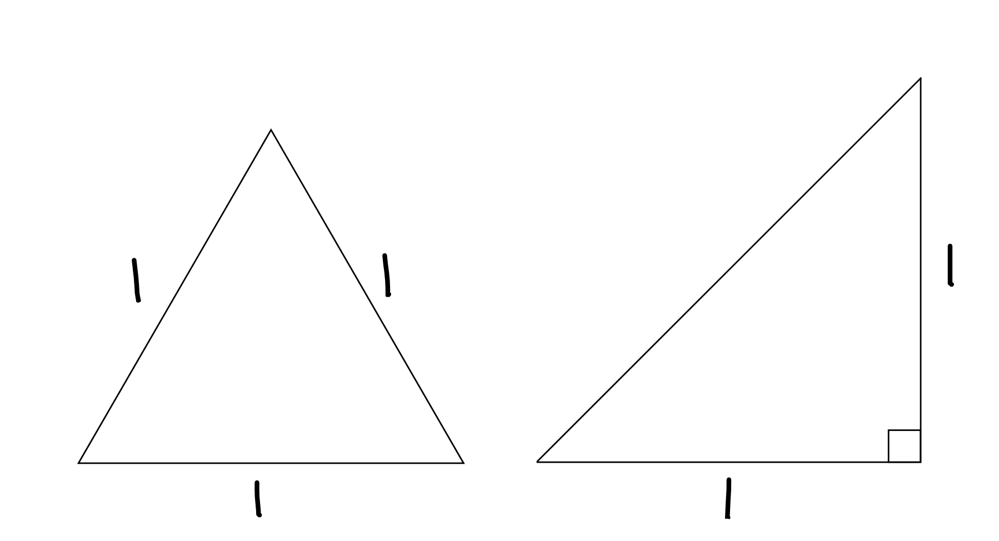
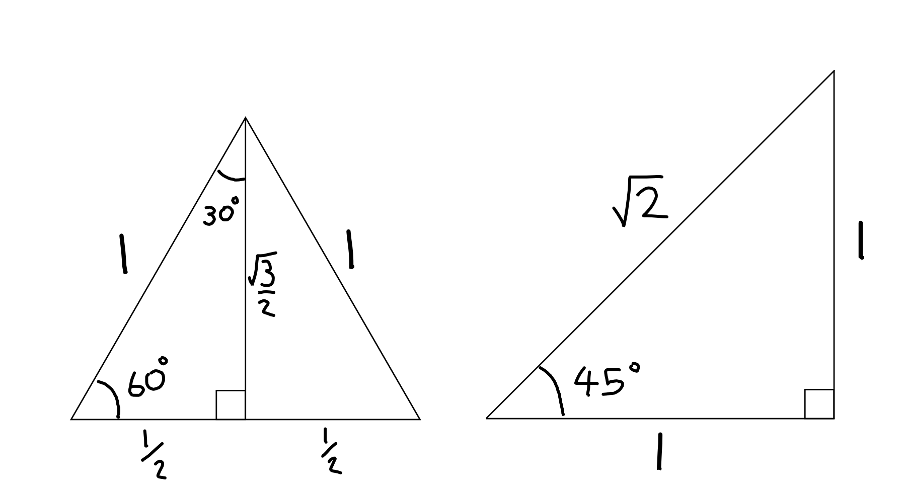
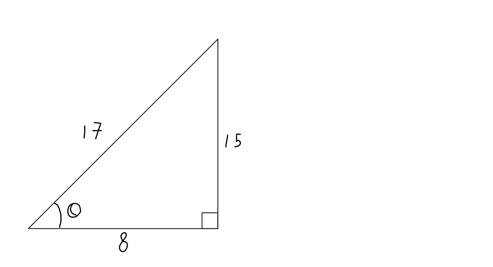

That instinctive reach for the calculator is something I've found to be near universal for GCSE and A level students. What makes this dangerous is how automatic it becomes. Even simple calculations cause students to doubt their own ability to count. Add in any amount of complexity and you have a recipe for silly mistakes and order of magnitude errors.
In this (hopefully short) post, I'll list a few tips. Hopefully a few you'll find useful!
1. Rearrangement before substitution
Even if the question is asking for something simple, rearrange the formula you are using before substituting numbers. In more complex cases you can find that common terms cancel out, saving you time and effort.
Finally as I stress to most of my students, I'm rarely interested in the final answer. I'm interested in how you got to it. By writing out the rearranged equation it makes it easier to see what you've done and spot mistakes easily.
For example
Q) Light is incident at \(30^\circ\) to the boundary between glass \(n=1.5\) and water \(n=1.33\). What is the outgoing angle?
A) \(n_1\sin\theta_1 = n_2\sin\theta_2\)
\(\theta_2 = \arcsin(\frac{n_1}{n_2}\sin\theta_1)\)
\(\theta_2 = \arcsin(\frac{1.5}{1.33}0.5)\)
Now grab the calculator to find the final answer
\(\theta_2 = 86^\circ\)
How did I know \(\sin(30^\circ)=0.5\)? See further down!
2. Cast everything into standard form
So you've found your final formula. Now we need to put the numbers in. We can our life immeasurably easier if we substitute in numbers in standard form?
Standard form is where we remove the power of tens from the number and ensure everything is in SI units. So 150 \(\mu\)m becomes \(1.5 \times 10^{-4}\) m. There are two advantages. Firstly we get more practice recalling \(\mu = 10^{-6}\) (which many students do get wrong!). Secondly it's trivial to collect powers of ten using our fabulous knowledge of indices. Consider the following simple example - no calculator needed!
Q) Estimate the mass of a swimming pool (density of water = 1000 kgm\({}^{-3}\))
A) mass = density * volume (\(m=\rho v\))
volume = length * width * height (\(v=xyz\))
\(\therefore m = \rho xyz\)
\(m = (1\times10^3)(2.5\times10)(1\times10)(2\times10^{0})\)
m = \(5\times10^5\) kg
It is also worth noting that the order of magnitude, the number above the ten, gives us an idea of whether our final answer is correct. For the above question does 100 metric tonnes sound reasonable for a swimming pool? I'd say so.
3. Common numbers, patterns and angles
More often that you might expect questions will try to make your life easier. There are too many possibilities for me to list them all but let's investigate a few. Square numbers, powers of two - both can be handy for quickly reaching a final answer without ever having to reach for a calculator.
Q) Simplify \(\sqrt{\frac{1024}{64}}\)
A) \(\sqrt{\frac{2^{10}}{2^6}}\)
\(\sqrt{2^4} = (2^4)^{0.5} = 2^2 = 4\)
Obviously this doesn't come over night, but it's an incredibly useful skill that will dividends by speeding up your mathematics reliably.
Next let's look at a pattern which comes along again and again - pythagorean triples. The first four are given below :
- 3, 4, 5
- 5, 12, 13
- 8, 15, 17
- 7, 24, 25
So why are these useful? In the first instance if we're given a triangle with two sides labelled we can quickly identify the third. Perhaps much more sneakily we can also do trignometry.
Let's first look at the two triangles below.

In the equalaterial triangle on the left we set each side to have a length of 1 and in the right angle triangle, we set the two shorter sides to also have a length of 1. With a little bit of pythagoras we can label these triangles to give us

Earlier I said that \(\sin(30^\circ\)) = 0.5$ and now we can see why. Sine is defined as the ratio of the opposite to the hypotoneuse. Which in this case is 0.5. Any time we need to find 30, 45 or 60 degrees we should recall these triangles.
Q) The final height in metres is given by \(x\). Simplify \(x = 20\sin(45^\circ)\)
A) \(\therefore x = 20 \times \frac{1}{\sqrt{2}}\)
\(x = 10 \times \frac{2}{\sqrt{2}}\)
\(x = 10\sqrt{2} \approx 14\) m
Now recall the pythagorean triples. We can actually do a similar sort of trick. If we're told that \(\sin\theta = \frac{4}{5}\) can you see that \(\cos\theta = \frac{3}{5}\) must also be true?
For instance :

\(\sin{\theta} = \frac{15}{17}, \cos{\theta}= \frac{8}{17}, \tan{\theta} = \frac{8}{15}\)
This can be exceedingly helpful for resolving vectors without loss of precision.
4. Learning to Approximation
Finally if we're interested in roughly how much an answer is, we can approximate. In this case we substitute into our equations only the order of magnitudes, not the actual numbers. This is known as a fermi estimation.
Whilst not recommended during an exam, this can be a quick way to validate an answer or find a good estimate very quickly.
A great example of one can be found on the what if xkcd blog.
Finally there are two more numbers that we can memorise to save time.
- The number of seconds in a year is \(\pi\times10^7\).
- Perhaps a bit more specialised - 197 MeV.fm = \(\hbar c\)
The error in the number of seconds calculate this way is less than 0.5%! Very handy. For instance
Q) How many metres to Alpha Centauri? (Alpha Centauri is 4.4Ly away). The speed of light is \(3\times10^8\) ms\({}^{-1}\)
A) Distance = \((\pi\times10^7)(4.4\times10^0)(3\times10^8)\)
Distance = \((3)(4.4)(\pi)\times10^{15}\)
Therefore Distance = \(4.1\times10^{16}\)m
Know anymore? Drop me a message and I'll add them!
Summary
The main thing to remember is to think...
'do I need to use a calculator really?'
If you've exhausted the above steps, then go for it!
Comments
comments powered by Disqus